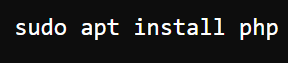
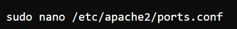
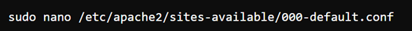
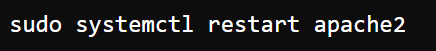
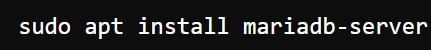
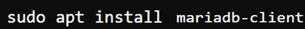
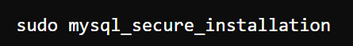
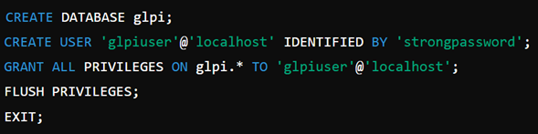
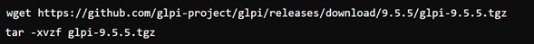
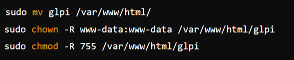

Actualización del Sistema
Comando: sudo apt update && sudo apt upgrade
Este comando se utiliza para actualizar la lista de paquetes disponibles y sus versiones, seguido por la actualización de todos los paquetes instalados en el sistema a sus últimas versiones disponibles. Es una buena práctica mantener el sistema actualizado para asegurarse de tener las últimas correcciones de errores y parches de seguridad.
Instalación de Apache
Comando: sudo apt install apache2
Este comando instala el servidor web Apache, que es uno de los servidores web más utilizados. Apache permite servir contenido web a los usuarios.
Instalación de PHP
Comando: sudo apt install php
PHP es un lenguaje de scripting del lado del servidor diseñado para el desarrollo web. Este comando instala PHP junto con el módulo de Apache que permite que Apache procese scripts PHP.
- 
Configuración de Apache para Usar el Puerto 81
sudo nano /etc/apache2/ports.conf Cambio: Añadir Listen 81
Por defecto, Apache escucha en el puerto 80. Este cambio le indica a Apache que también escuche en el puerto 81.
- 
Edición del Archivo de Configuración del Sitio Web
sudo nano /etc/apache2/sites-available/000-default.conf Cambio: Cambiar VirtualHost *:80 a VirtualHost *:81
Este cambio en la configuración del sitio web de Apache le dice a Apache que el sitio debería estar disponible en el puerto 81 en lugar del puerto 80.
- 
Reiniciar Apache
sudo systemctl restart apache2
Reinicia el servidor Apache para aplicar los cambios realizados en su configuración.
- 
Instalación de MariaDB
sudo apt install mariadb-server
MariaDB es un sistema de gestión de bases de datos relacional que es compatible con MySQL. Este comando instala el servidor de bases de datos MariaDB.
- 
- 
Verificación e Inicialización de MariaDB
sudo mysql_secure_installation
Este comando ayuda a asegurar la instalación de MariaDB configurando una contraseña para el usuario root y eliminando cuentas de usuario anónimas, bases de datos de prueba, y deshabilitando el inicio de sesión remoto para el root.
Nos aseguramos de que si haya quedado instalada la base de datos, aceptamos sus términos y condiciones y nos agradecerá con un mensaje.
- 
Creación de la Base de Datos y Usuario para GLPI
sudo mysql -u root -p
Estos comandos crean una base de datos llamada glpi, un usuario glpiuser con una contraseña especificada, y le otorgan todos los privilegios sobre la base de datos glpi.
- 
Instalación de GLPI
wget -O- https://github.com/glpi-project/glpi/releases/download/9.5.3/glpi-9.5.3.tgz | tar -xzv
Este comando descarga y descomprime el archivo de GLPI, una aplicación de gestión de TI.
- 
Mover GLPI al Directorio de Apache
sudo mv glpi /var/www/html
sudo chowm -R www-data:www.data /var/www/html/glpi
sudo chmod -R 755 /var/www/html/glpi
Este comando mueve el directorio descomprimido de GLPI al directorio raíz de documentos de Apache para que pueda ser servido como un sitio web.
- 
----------------------
----------------------